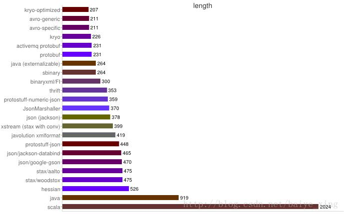

几种序列化协议的介绍(转)
序列化概述
1.序列化定义
序列化（serialization）就是将对象序列化为二进制形式（字节数组）， 一般也将序列化称为编码（Encode），主要用于网络传输、数据持久化等；
反序列化（deserialization）则是将从网络、磁盘等读取的字节数组还原成原始对象， 以便后续业务的进行，一般也将反序列化称为解码（Decode）， 主要用于网络传输对象的解码，以便完成远程调用。
2.序列化的“鼻祖”
我知道的第一种序列化协议就是Java默认提供的序列化机制，需要序列化的Java对象只需要实现 Serializable / Externalizable 接口并生成序列化ID，这个类就能够通过 ObjectInput 和 ObjectOutput 序列化和反序列化，若对Java默认的序列化协议不了解，或是遗忘了，请参考：序列化详解
3.影响序列化性能的关键因素
- 序列化后的码流大小（网络带宽的占用）；
- 序列化的性能（CPU资源占用）；
- 是否支持跨语言（异构系统的对接和开发语言切换）。
几种流行的序列化协议比较
1、XML
(1). 定义：
XML（Extensible Markup Language）是一种常用的序列化和反序列化协议，
它历史悠久，从1998年的1.0版本被广泛使用至今。
(2). 优点
人机可读性好
可指定元素或特性的名称
(3). 缺点
序列化数据只包含数据本身以及类的结构，不包括类型标识和程序集信息。
类必须有一个将由 XmlSerializer 序列化的默认构造函数。
只能序列化公共属性和字段
不能序列化方法
文件庞大，文件格式复杂，传输占带宽
(4). 使用场景
当做配置文件存储数据
实时数据转换
2、JSON
(1). 定义
JSON(JavaScript Object Notation, JS 对象标记) 是一种轻量级的数据交换格式。
它基于 ECMAScript (w3c制定的js规范)的一个子集，
JSON采用与编程语言无关的文本格式，但是也使用了类C语言
（包括C， C++， C#， Java， JavaScript， Perl， Python等）的习惯，
简洁和清晰的层次结构使得 JSON 成为理想的数据交换语言。
(2). 优点
前后兼容性高
数据格式比较简单，易于读写
序列化后数据较小，可扩展性好，兼容性好
与XML相比，其协议比较简单，解析速度比较快
(3). 缺点
数据的描述性比XML差
不适合性能要求为ms级别的情况
额外空间开销比较大
(3). 适用场景（可替代ＸＭＬ）
跨防火墙访问
可调式性要求高的情况
基于Web browser的Ajax请求
传输数据量相对小，实时性要求相对低（例如秒级别）的服务
3、Fastjson
（1）定义
Fastjson是一个Java语言编写的高性能功能完善的JSON库。
它采用一种“假定有序快速匹配”的算法，把JSON Parse的性能提升到极致。
（2）优点
接口简单易用
目前java语言中最快的json库
（3）缺点
过于注重快，而偏离了“标准”及功能性
代码质量不高，文档不全
（4）适用场景
协议交互
Web输出
Android客户端
4、Thrift
（1）定义：
Thrift并不仅仅是序列化协议，而是一个RPC框架。
它可以让你选择客户端与服务端之间传输通信协议的类别，
即文本(text)和二进制(binary)传输协议,
为节约带宽，提供传输效率，
一般情况下使用二进制类型的传输协议。
（2）优点
序列化后的体积小, 速度快
支持多种语言和丰富的数据类型
对于数据字段的增删具有较强的兼容性
支持二进制压缩编码
（3）缺点
使用者较少
跨防火墙访问时，不安全
不具有可读性，调试代码时相对困难
不能与其他传输层协议共同使用（例如HTTP）
无法支持向持久层直接读写数据，即不适合做数据持久化序列化协议
（4）适用场景
分布式系统的RPC解决方案
5、Avro
（1）定义：
Avro属于Apache Hadoop的一个子项目。
Avro提供两种序列化格式：JSON格式或者Binary格式。
Binary格式在空间开销和解析性能方面可以和Protobuf媲美，
Avro的产生解决了JSON的冗长和没有IDL的问题
（2）优点
支持丰富的数据类型
简单的动态语言结合功能
具有自我描述属性
提高了数据解析速度
快速可压缩的二进制数据形式
可以实现远程过程调用RPC
支持跨编程语言实现
（3）缺点
对于习惯于静态类型语言的用户不直观
（4）适用场景
在Hadoop中做Hive、Pig和MapReduce的持久化数据格式
6、Protobuf
（1）定义
protocol buffers 由谷歌开源而来，在谷歌内部久经考验。
它将数据结构以.proto文件进行描述，
通过代码生成工具可以生成对应数据结构的POJO对象和Protobuf相关的方法和属性。
（2）优点
序列化后码流小，性能高
结构化数据存储格式（XML JSON等）
通过标识字段的顺序，可以实现协议的前向兼容
结构化的文档更容易管理和维护
（3）缺点
需要依赖于工具生成代码
支持的语言相对较少，官方只支持Java 、C++ 、Python
（4）适用场景
对性能要求高的RPC调用
具有良好的跨防火墙的访问属性
适合应用层对象的持久化
7、其它
- protostuff基于protobuf协议，但不需要配置proto文件，直接导包即
- Jboss marshaling可以直接序列化java类， 无须实java.io.Serializable接口
- Message pack一个高效的二进制序列化格式
- Hessian采用二进制协议的轻量级remoting onhttp工具
- kryo基于protobuf协议，只支持java语言,需要注册（Registration）， 然后序列化（Output），反序列化（Input）
8、性能对比图解
时间消耗对比
空间消耗对比 
分析上图知：
- XML序列化（Xstream）无论在性能和简洁性上比较差。
- Thrift与Protobuf相比在时空开销方面都有一定的劣势。
- Protobuf和Avro在两方面表现都非常优越。
9、选型建议
不同的场景适用的序列化协议：
- 对于公司间的系统调用，如果性能要求在100ms以上的服务，基于XML的SOAP协议是一个值得考虑的方案。
- 基于Web browser的Ajax，以及Mobile app与服务端之间的通讯，JSON协议是首选。对于性能要求不太高，或者以动态类型语言为主，或者传输数据载荷很小的的运用场景，JSON也是非常不错的选择。
- 对于调试环境比较恶劣的场景，采用JSON或XML能够极大的提高调试效率，降低系统开发成本。
- 当对性能和简洁性有极高要求的场景，Protobuf，Thrift，Avro之间具有一定的竞争关系。
- 对于T级别的数据的持久化应用场景，Protobuf和Avro是首要选择。如果持久化后的数据存储在Hadoop子项目里，Avro会是更好的选择。
- 由于Avro的设计理念偏向于动态类型语言，对于动态语言为主的应用场景，Avro是更好的选择。
- 对于持久层非Hadoop项目，以静态类型语言为主的应用场景，Protobuf会更符合静态类型语言工程师的开发习惯。
- 如果需要提供一个完整的RPC解决方案，Thrift是一个好的选择。
- 如果序列化之后需要支持不同的传输层协议，或者需要跨防火墙访问的高性能场景，Protobuf可以优先考虑。
转原始文章